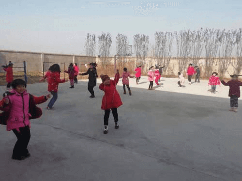
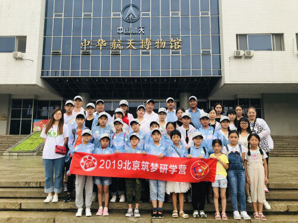
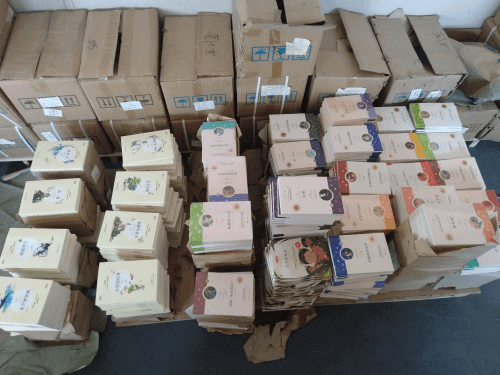
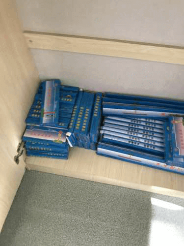

益路童行

2016年10月20日，清晨。简单收拾了一下背包，刘佩先生踏上了归家的旅程。
从上海到安康，58天，风雨无阻，用脚丈量出1558公里的路途。
从上海到安康，江苏、安徽、湖北、河南、陕西，途径5省，募集善款110万，捐助了5所小学。
在梁家川，刘佩先生这么说：【益路童行】行的是公益，为的是孩子。【益路童行】不止是人生中的一次徒步，不单是一项公益活动，也是我人生的再一次成长。
而一切的起因，和人们想的一样，并没有什么耀眼的光芒。不过是感概于日渐疲乏的身体，还有或许在哪里看到的，山区孩子的模样。我想，我们应该对Ta都有印象，一张圆嘟嘟、却脏兮兮的小脸，还有那小心翼翼、却充满期待的目光。
为了身体的健康，让我们迈动双腿。为了孩子的梦想，让我们走向远方。
【益路童行】，旨在守护健康，关爱儿童，历时4年，从上海、到安康、到墨脱、到北京、到全国各地、到大洋彼岸，我们挑战所有的艰难，为孩子们募集了善款257万余元，修建了音乐教室、电脑室、科学实验室、操场，购置了书桌、图书、电脑、空调、皮卡车，培训了近百名师生。
 在墨脱，我们给孩子们上课，教他们四则运算，带他们读书、认字，带他们踢球，告诉他们外边世界的模样。

在河南，我们和孩子们一起吃饭、一起做游戏。临别时分，他们抱着我们的腿不愿撒开。
为了孩子，为了我们，为爱前行。